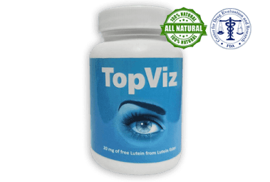
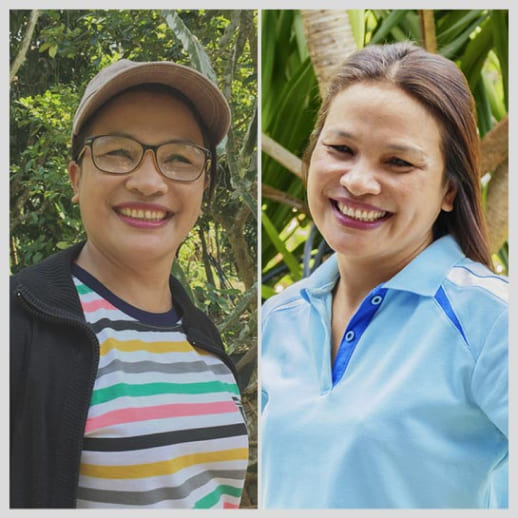

ПРОСТОЙ СПОСОБ ВОССТАНОВИТЬ ЗРЕНИЕ ЗА 1 МЕСЯЦ!
26.08.2022
Если хотите узнать, как я восстановила зрение с -3,50 до 0,7 без операций и дорогих процедур, то читайте до конца. В конце вас ждет приятный бонус.

Мое зрение - моя вечная проблема. Кто знает, как сложно жить и не видеть номер автобуса, лицо знакомого и разглядывать ценники в магазинах, как старушка, меня поймут😢
До колледжа мое зрение было -2,00 на обоих глазах. Когда я начала работать бухгалтером зрение резко ухудшилось. Постоянная работа за компьютером, напряжение и усталость глаз сильно сказались на здоровье. На осмотре врач сказал, что зрение упало до -3,50. Так я решилась на очки.
Выбрала красивую оправу и думала, что жизнь наладится. Но я еще не знала, что они начнут вызывать жуткую боль на переносице, а еще головокружение. Сколько я перепробовала моделей, оправ… ничего не помогало. Подруга посоветовала заменить очки линзами. В итоге все оказалось еще хуже: глаза слезились, началось раздражение, а последней каплей стал конъюнктивит😡
Конъюнктивит-воспалительное поражение конъюнктивы – слизистой оболочки, покрывающей внутреннюю поверхность век и склеру.
Я обошла несколько дорогих частных клиник, всех лучших специалистов и потратила около 10 000$ на бесполезные методы и “инновационные” препараты - эффекта НОЛЬ! Представляете, я просто выкинула деньги в мусор. А все советы врачей сводились только к тому, что выписывался ряд типичных препаратов, за продажу которых они получают комиссионные.
В КЛИНИКЕ ВАМ ПОСОВЕТУЮТ ТО, НА ЧЕМ ВРАЧ ЗАРАБОТАЕТ! К СОЖАЛЕНИЮ, НИКТО НЕ ЗАИНТЕРЕСОВАН В НАШЕМ ВЫЗДОРОВЛЕНИИ…🤷♀️
Кроме физических и материальных проблем у меня появилась дикая неуверенность в себе. Если раньше мужчины оборачивались и делали комплименты, то в очках меня просто перестали замечать. Даже мой парень, с которым мы вместе чуть больше года, стал отдаляться, а в итоге просто пропал (потом увидела его с другой). Я осталась одна и даже перестала выходить в люди, встречаться с подругами и ушла в работу. Зрение из-за стресса стремительно падало. Настолько устала, что даже согласилась на операцию.
ОПЕРАЦИЯ: делать или нет?
Я так хотела, чтобы в один миг мои мучения закончились и я смогла видеть хорошо, снова стать привлекательной и уверенной девушкой. Но операция меня безумно пугала, страх буквально парализовал меня. Все отговаривали, пугая что я могу вообще ослепнуть.
Когда мне говорили, что можно восстановить зрение, не прибегая к операции , я не верила. Мне казалось никто не хочет моего выздоровления и не понимают моих проблем. Я просто отказывалась их слушать.
БЕЗОПАСНЫЙ МЕТОД ВОССТАНОВЛЕНИЯ ЗРЕНИЯ
Однажды я услышала, как коллеги обсуждали, что восстановили зрение без операции с -4,00 до -1,00. И тут меня озарило!😳 Как я не увидела, что половина наших офисных “очкариков” сняли очки и даже не носят линзы? Я жила как в тумане, одержима своей операцией. Я робко подошла к коллегам и начала узнавать подробности.
Оказывается, пару месяцев назад, на просторах интернета, они увидели отзывы известных врачей на капсулы для улучшения зрения TopViz. Изучив подробно всю информацию они решились заказать препарат и попробовать, противопоказаний не было.
 Pedir Revitaprost con un 50% de descuento >>>Опытные окулисты знают о капсулах TOPVIZ, ведь именно этот препарат способен заменить дорогостоящие процедуры и операции. Игнорирование подобных инновационных препаратов - умышленное преступление перед слабовидящим населением.
“Тысячи благодарственных отзывов на TopViz и жалобы на аптечные препараты вызвали бум в фарминдустрии. Инновационные капсулы разработаны на основе растительных экстрактов и не имеют аналогов на рынке. Крупные производители неэффективных препаратов для зрения возмущены и делают все возможное, чтобы убрать конкурента с рынка”.
“Независимые медицинские эксперты и критики высоко оценили капсулы для улучшения зрения TopViz. Эффективность доказана научными экспериментами и тысячами историй полного восстановления зрения. Населению больше не потребуются дорогостоящие операции и процедуры”.
Заказ коллег прибыл очень быстро, а посылку оплатили при получении , что очень удобно.
РЕЗУЛЬТАТЫ ПРОСТО ПОРАЗИЛИ! Зрение у Абхи улучшилось с -2,50 до 1,00, у Рати с +1,50 до 1,00, а у Рохан с -4,00 до -1,00 диоптрий. Потребовался всего один курс применения в 20 недель!
Я была немного шокирована и решила попробовать. Тем более, с потраченной мной суммой ранее - цена препарата копеечная. Сделала заказ и через несколько дней курьер доставил мне капсулы.
По виду ничего сверхъестественного, обычные капсулы. Состав абсолютно натуральный, растительные экстракты и никаких синтетических примесей. Использовать легко: просто ежедневно принимаете капсулу, запивая стаканом воды. Просто и понятно. Прилагается инструкция, где подробно и по шагам рассказано, как нужно действовать, чтобы восстановить зрение.
МОИ РЕЗУЛЬТАТЫ
Я действовала по инструкции и принимала капсулы каждый день, в день уходило не более 3 секунд на манипуляции. Спустя 4 недели я почувствовала, что вижу лучше, картинка так не плывет и, вроде как, гораздо ярче😍
Пошла проверить зрение и была удивлена…с -3,50 мое зрение улучшилось до -1,00, представляете? Я не поверила, даже думала ошибка.
Прошло еще 2 недели и мое зрение +0,7! Полный курс восстановления зрения занял у меня всего полтора месяца. Теперь я вижу четко и ясно, без бликов и смазанной картинки. Я все еще на эмоциях, ведь моя мечта сбылась, я снова вернулась к жизни и безумно счастлива!💃🏻
Я и подумать не могла, что существует такой быстрый и безопасный препарат для восстановления зрения. И хочу рассказать об этом как можно большему количеству людей.
Система здравоохранения обманывает нас, зарабатывая на нашей беспомощности и заставляя платить за операции, очки, линзы и бездарные препараты из аптеки. Они не хотят терять пациентов и делают из нас конвейер…((
ГДЕ ЗАКАЗАТЬ
Предвидя вопросы читателей о покупке капсул TopViz, спешу обрадовать вас!)) Я связалась с официальными представителями препарата и попросила дать ссылку на сайт. Они предложили более удобный вариант - форма заказа прямо из моего блога. Здорово, правда? Тем более, что цена капсул равна 3 пакетам контактных линз или 4 билетам в кино.
Еще одна хорошая новость для всех моих читателей! С 30.08.2022 по 30.08.2022 вы можете приобрести капсулы СО СКИДКОЙ 50%. Просто подарок, успейте, пока актуально)
↓КАПСУЛЫ TOPVIZ МОЖНО ЗАКАЗАТЬ ТУТ↓
ФОРМА ОФИЦИАЛЬНОГО ПРОИЗВОДИТЕЛЯ
Al día 30.08.2022 el número de artículos a precio de promoción es de:
Не переходите на сторонние сайты и не покупайте с рук - не станьте жертвами мошенников!
Formulario oficial de pedido
№ 29 982 de 30 000, 30.08.2022
790 MXN
Para obtener Keratinorm con un descuento del 50%, introduce tu nombre y número de contacto en los campos siguientes y haz clic en "Pedir".
*для достижения максимального эффекта рекомендуется принимать курсом
Дорогие мои, я надеюсь мой опыт будет полезен для вас. А те, кто страдает от плохого зрения, как и я раньше, получит шанс на полноценную жизнь. Я очень надеюсь на это, ведь моя жизнь изменилась кардинально! 🔥
После прохождения полного курса прошло более 3-х месяцев, я больше не принимаю капсулы, и вижу прекрасно. Я стала уверенной, выкинула все свои очки и линзы, и хожу с гордо поднятой головой. Парни провожают меня взглядом, а я смеюсь, ведь еще недавно была запуганной серой мышкой, на которую никто не обращал внимания.
Даже моя пожилая мама смогла начать новую жизнь. Последние 10 лет она не выходила в магазин без очков, и читала только с ними. Сейчас это в прошлом! Моя прекрасная мама пропила полный курс и забыла про свои очки. Подружки уже спрашивают телефон ее хирурга, но мы то знаем правду… ))
И еще, у меня к вам маленькая просьба! Если кто-то уже пробовал данные капсулы, поделитесь впечатлением в комментариях. Очень интересно и будет полезно остальным.


ответ Pooja Yash Shah
Вот уже 3 месяца не принимаю капсулы и вижу прекрасно. Зрение в норме, и мушки перед глазами больше не беспокоят.


Доктор Rehman Brock Ramakrishnan
профессор медицинских наук, врач-офтальмолог с 25-летним опытом
“После того, как мои пациенты пропивают полный курс TopViz, происходит полное восстановление зрения, увеличивается плотность зрительного пигмента в сетчатке, поддерживается активность желез и улучшается качество зрения. У 100% снижается риск развития катаракты и прогрессирование дистрофических заболеваний сетчатки глаза.
Сделаю акцент, что этот препарат не имеет аналогов, так как создан исключительно на растительной основе - это уникальное сочетание высококонцентрированных экстрактов полезных растений. В отличие от аптечных химических препаратов, Topviz не оказывает негативного воздействия на сердце и другие органы. Воздействует мягко и не имеет побочных эффектов”.
-

Является на 100% натуральным и экологичным препаратом
-

Не имеет противопоказаний для людей с хроническими заболеваниями
-
Обладает накопительным эффектом: улучшение зрения возможно только после прохождения полного курса
-
Положительную динамику можно заметить уже в первую неделю
Многие врачи-офтальмологи знают о препарате TopViz и его высокой эффективности, но гораздо выгоднее проводить хирургические операции и делать лазерную коррекцию зрения, чем рекомендовать препарат, который навсегда восстанавливает зрение по доступной для каждого цене!